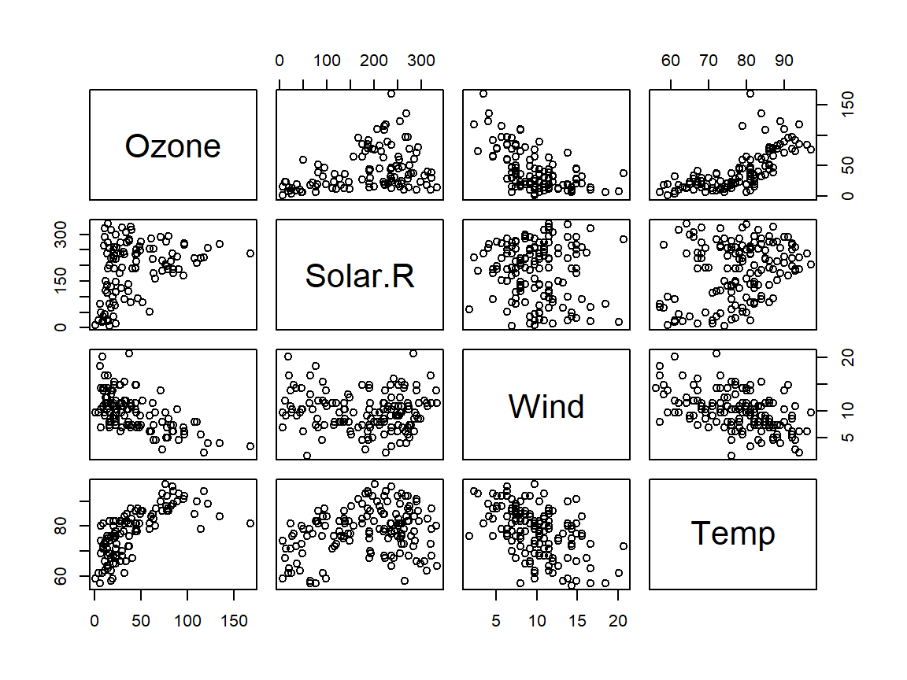
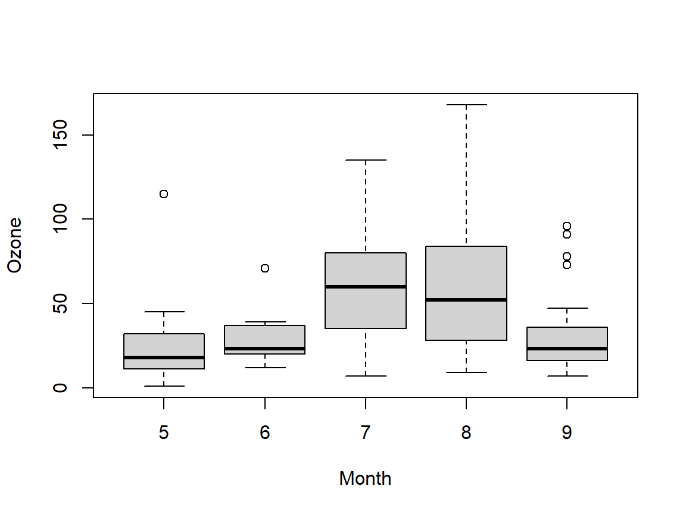
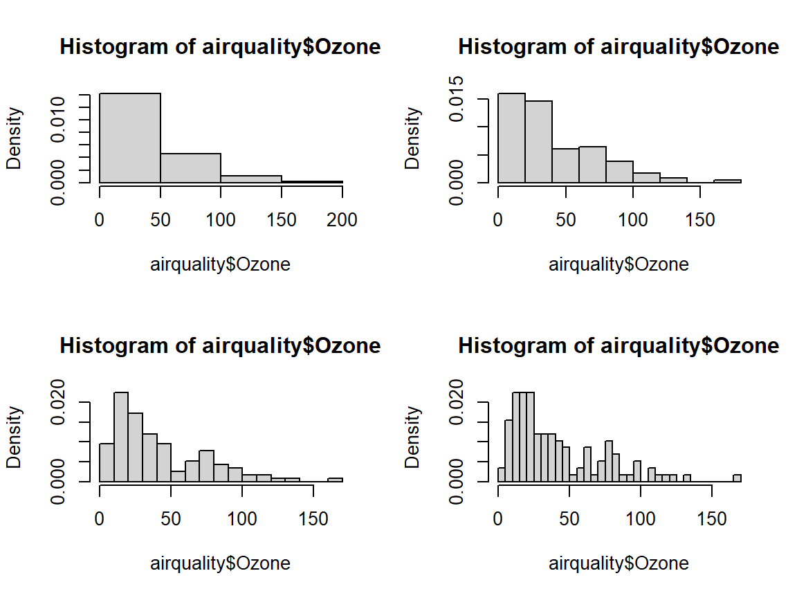

2 Working with Data in R
In this chapter we will start to work with data objects within R, and begin to understand better how the various concepts we learned in the introductory chapter are relevant to working with data.
R developers have created functions and packages for almost every laborious task that stands between us and good quantitative scientific analysis. Data input, manipulation, and output is easy in R. It is just a matter of breaking down what needs to be done into small achievable tasks, and knowing the right functions.
2.1 Data Frames
We saw a number of object types in the introductory chapter, from single numbers to vectors and matrices; character strings; logical objects etc. We also saw dynamic objects like functions.
When it comes to working with data, we typically have a collection of variables measured on a set of entities
- These could be, for example, health related variables measured on a group of individuals (the “entities”).
A convenient way of storing these data is in a tabular format, where each row in the table represents one of the individuals/entities and each column represents one of the variables. Table-like objects for storing multiple individual objects of the same type can be achieved with the use of matrices, as we saw briefly with matrices of numbers in the previous chapter. However, when some of the variables are of a different type it becomes difficult to store them all in a matrix.
Data frames are sort of like a mixture of a matrix and a list. Like a matrix, they have a tabular format, but like a list we are not restricted to having the same object types throughout. The elements in a data frame can also be accessed using the same approaches as for a matrix (indexing) or a list (by name or index).
When indexing a data frame as one would a matrix, we use exactly the same syntax, i.e. dataframe[row_indices,column_indices]. The result is itself a data frame containing only the subset of the full data frame which is indexed. On the other hand, when treating a data frame as a list, the elements of the data frame correspond with entire columns of its tabular format. For example, dataframe[,1] and dataframe[[1]] operate very similarly.
Let’s create a data frame containing the data on the sizes and masses of the planets in the solar system.
planets <- data.frame(
name = c("Mercury", "Venus", "Earth",
"Mars", "Jupiter", "Saturn",
"Uranus", "Neptune"),
mass = c(3.30 * 10^23, 4.87 * 10^24, 5.97 * 10^24,
6.42 * 10^23, 1.90 * 10^27, 5.68 * 10^26,
8.68 * 10^25, 1.02 * 10^26),
radius = c(2.440 * 10^6, 6.052 * 10^6, 6.371 * 10^6,
3.390 * 10^6, 6.991 * 10^7, 5.823 * 10^7,
2.536 * 10^7, 2.462 * 10^7)
)Note that the type of a data frame is a list, but the class of an object typically dictates how it is actually processed.
## [1] "list"## [1] "data.frame"## [1] TRUE## [1] TRUETo access specific contents, we can, as mentioned above, do this by indexing or by name:
## [1] 3.30e+23 4.87e+24 5.97e+24 6.42e+23 1.90e+27 5.68e+26 8.68e+25 1.02e+26## name mass radius
## 1 Mercury 3.3e+23 2440000## [1] 3.3e+23- In R the class of objects is very important. The same function, for
example
summary()andplot(), will perform differently depending upon the class of the object.
Since we created this data frame, we already know the names of the
variables that are contained within it. But say we load a foreign data
set, how do we know what the variables are called? Outside R, we hope
that this data set also has good documentation, such as a PDF or website
telling you all the details you could ever want know. But within R, we
can get a list of the attributes of an object by using the names()
function:
## [1] "name" "mass" "radius"As well as using names(), it is also good practice to check the size
of the data frame. As with matrices, the functions nrow(), ncol() and dim() can be applied to data frames.
## [1] 8## [1] 3## [1] 8 3Ultimately, there is a great function that contains and prints all this
information for your in a convenient format, str. This will print also
the class of the columns and the first few observations, and can be a
pretty useful function to have a first look at a new data frame:
## 'data.frame': 8 obs. of 3 variables:
## $ name : chr "Mercury" "Venus" "Earth" "Mars" ...
## $ mass : num 3.30e+23 4.87e+24 5.97e+24 6.42e+23 1.90e+27 ...
## $ radius: num 2440000 6052000 6371000 3390000 69910000 ...As with lists, we can add to a data frame by simplying creating newly named variables. For example, we could estimate the average density of each planet and add this as a new variable/field
### First we can calculate the volumes of each, assuming they
### are approximately spherical
volumes <- 4/3*pi*planets$radius^3
### Now we can add the densities to our data frame
planets$density <- planets$mass/volumes
planets$density## [1] 5423.2029 5244.9771 5511.4124 3934.1175 1327.5384 686.7827 1270.5254
## [8] 1631.7267Factor Variables
It is common in statistical data to have categorical variables, indicating some subdivision of the data, such as social class, primary diagnosis, tumour stage, gender, species, etc. Such variables are stored in data files often as strings indicating their actual value, though abbreviations may be used; e.g. “m” for male, and “f” for female. But, due to the actual number of observations, it may be more sensible to store the categorical data using numerical codes; 1 for male, 2 for female. With their meaningful names then being store in the documentation for the data.
Regardless of how they are originally stored, in R they should be converted to factors. A factor is a data structure which stores the categorical data as numerical codes, but has labels which make the codes meaningful.
Mercury, Venus, Earth and Mars are called the terrestrial planets, as they are primarily composed of rock and metal. Jupiter and Saturn, are composed mainly of hydrogen and helium, thus are referred to as gas giants. Finally, Uranus and Neptune, are composed largely of substances with relatively high melting points, thus are often referred to separately as ice giants. We can add a variable which categorises the planets in this way
## [1] "terrestrial" "terrestrial" "terrestrial" "terrestrial" "gas_giant"
## [6] "gas_giant" "ice_giant" "ice_giant"Now, as it is currently planets$type is a vector of character objects, and although it clearly delineates which items are in each of the categories we can explicitly convert
this to a factor using as.factor()
## [1] terrestrial terrestrial terrestrial terrestrial gas_giant gas_giant
## [7] ice_giant ice_giant
## Levels: gas_giant ice_giant terrestrialNow when we print the type variable we see that it now has what are called Levels, which are the
labels which give meaning to the category codes. In this example we named the codes with meaningful
labels already, however as mentioned previously it may be more convenient, when there is a large number
of categories to use numeric codes but use the Levels to encode meaning
pain <- c(0, 1, 3, 2, 2, 1, 1, 3)
pain_f <- factor(pain, levels = 0:3,
labels = c("none", "mild", "medium", "severe"))
pain_f## [1] none mild severe medium medium mild mild severe
## Levels: none mild medium severe## [1] "none" "mild" "severe" "medium" "medium" "mild" "mild" "severe"2.1.1 Combining Data Frames
Let’s suppose we want to combine the contents of multiple data frames. We may, for example, be collating the data from multiple sources. When everything is “nice”, in that each data frame has the same collection of variables (with the same names!), then the function rbind() can be used. However, when some of the data frames are missing certain of the variables then this will give us an error.
Let’s create a small data frame containing “newly discovered exoplanets”.
exoplanets <- data.frame(
name = c("Kepler-186f", "Kepler-62f", "Kepler-438b"),
mass = c(1.9 * 10^23, 3.32 * 10^23, 2.64 * 10^23),
radius = c(1.17 * 10^6, 1.41 * 10^6, 1.12 * 10^6)
)Since this data frame does not have the fields $density and $type, which we created, trying to row-bind with planets will fail:
## Error in rbind(deparse.level, ...): numbers of columns of arguments do not matchIf we create these fields for exoplanets as well then all should be fine.
exoplanets$density <- exoplanets$mass / (4/3*pi*exoplanets$radius^3)
exoplanets$type <- "exo"
rbind(planets, exoplanets)## name mass radius density type
## 1 Mercury 3.30e+23 2440000 5423.2029 terrestrial
## 2 Venus 4.87e+24 6052000 5244.9771 terrestrial
## 3 Earth 5.97e+24 6371000 5511.4124 terrestrial
## 4 Mars 6.42e+23 3390000 3934.1175 terrestrial
## 5 Jupiter 1.90e+27 69910000 1327.5384 gas_giant
## 6 Saturn 5.68e+26 58230000 686.7827 gas_giant
## 7 Uranus 8.68e+25 25360000 1270.5254 ice_giant
## 8 Neptune 1.02e+26 24620000 1631.7267 ice_giant
## 9 Kepler-186f 1.90e+23 1170000 28320.9232 exo
## 10 Kepler-62f 3.32e+23 1410000 28274.3179 exo
## 11 Kepler-438b 2.64e+23 1120000 44860.2046 exoNote that when binding the data frames together in this way R will have added a new level to the $type field
## [1] "gas_giant" "ice_giant" "terrestrial" "exo"However, if we had incorrectly named one of the variables/fields in either of the data frames R would still not have been happy. The dplyr package contains a number of useful functions for handling data frames more effectively. For example, the function bind_rows() is functionally very similar to rbind() but if some of the data frames have different variables then the collection of all variables across all data frames being combined will be included.
### First load the dplyr library
library(dplyr)
### Let's add to the planets data frame their distances from the sun
planets$distance <- c(58*10^6, 108*10^6, 150*10^6, 228*10^6, 779*10^6, 1400*10^6, 2900*10^6, 4500*10^6)
bind_rows(planets, exoplanets)## name mass radius density type distance
## 1 Mercury 3.30e+23 2440000 5423.2029 terrestrial 5.80e+07
## 2 Venus 4.87e+24 6052000 5244.9771 terrestrial 1.08e+08
## 3 Earth 5.97e+24 6371000 5511.4124 terrestrial 1.50e+08
## 4 Mars 6.42e+23 3390000 3934.1175 terrestrial 2.28e+08
## 5 Jupiter 1.90e+27 69910000 1327.5384 gas_giant 7.79e+08
## 6 Saturn 5.68e+26 58230000 686.7827 gas_giant 1.40e+09
## 7 Uranus 8.68e+25 25360000 1270.5254 ice_giant 2.90e+09
## 8 Neptune 1.02e+26 24620000 1631.7267 ice_giant 4.50e+09
## 9 Kepler-186f 1.90e+23 1170000 28320.9232 exo NA
## 10 Kepler-62f 3.32e+23 1410000 28274.3179 exo NA
## 11 Kepler-438b 2.64e+23 1120000 44860.2046 exo NANotice that, rather than producing an error, bind_rows() has created NA entries in the $distance field for exoplanets. In R, NA is a special value that represents missing or undefined data.
2.1.2 “Filtering”
We saw how we could isolate different parts of a data frame either by explicitly specifying row and column indices, or by accessing the fields in data frame as a list using dataframe$fieldname. Indexing by explicit lists of row/column indices can be risky if we aren’t fully on top of where different items and variables are stored.
We can also isolate parts of a vector/matrix/array/data frame by specifying conditions for the indices or field names, just as we used conditional statements to direct the flow of our code. Specifically, if we have a data frame with dimensions n (rows) and p (variables/columns), then we can pass a vector of n logical objects (i.e. TRUE and FALSE) instead of specifying row indices (or p such logicals instead of column indices). R will then extract only the rows/columns associated with the TRUE indices.
For example, suppose we wanted to extract the planets whose masses are less than the average mass:
## name mass radius density type distance
## 1 Mercury 3.30e+23 2440000 5423.203 terrestrial 5.80e+07
## 2 Venus 4.87e+24 6052000 5244.977 terrestrial 1.08e+08
## 3 Earth 5.97e+24 6371000 5511.412 terrestrial 1.50e+08
## 4 Mars 6.42e+23 3390000 3934.117 terrestrial 2.28e+08
## 7 Uranus 8.68e+25 25360000 1270.525 ice_giant 2.90e+09
## 8 Neptune 1.02e+26 24620000 1631.727 ice_giant 4.50e+09Let’s examine what has happened here. In place of an explicit list of row indices we provided a logical comparison between the vector of entries in planets$mass and the single numeric quantity mean(planets$mass).
## [1] TRUE TRUE TRUE TRUE FALSE FALSE TRUE TRUEWe can see that this logical comparison has compared each entry in the vector of masses with the single quantity mean(planets$mass) and returned a vector with the corresponding logical evaluations of the comparisons. When passed as indices R has extracted only those rows where the logical comparison evaluated to TRUE.
We can use the Boolean operators to create more complex indexing.
## name mass radius density type distance
## 1 Mercury 3.30e+23 2440000 5423.203 terrestrial 5.80e+07
## 2 Venus 4.87e+24 6052000 5244.977 terrestrial 1.08e+08
## 3 Earth 5.97e+24 6371000 5511.412 terrestrial 1.50e+08
## 4 Mars 6.42e+23 3390000 3934.117 terrestrial 2.28e+08The filter funcion in the dplyr package provides a perhaps more accessible syntax for performing this sort of filtering.
## name mass radius density type distance
## 1 Mercury 3.30e+23 2440000 5423.203 terrestrial 5.80e+07
## 2 Venus 4.87e+24 6052000 5244.977 terrestrial 1.08e+08
## 3 Earth 5.97e+24 6371000 5511.412 terrestrial 1.50e+08
## 4 Mars 6.42e+23 3390000 3934.117 terrestrial 2.28e+08
## 5 Uranus 8.68e+25 25360000 1270.525 ice_giant 2.90e+09
## 6 Neptune 1.02e+26 24620000 1631.727 ice_giant 4.50e+09## name mass radius density type distance
## 1 Mercury 3.30e+23 2440000 5423.203 terrestrial 5.80e+07
## 2 Venus 4.87e+24 6052000 5244.977 terrestrial 1.08e+08
## 3 Earth 5.97e+24 6371000 5511.412 terrestrial 1.50e+08
## 4 Mars 6.42e+23 3390000 3934.117 terrestrial 2.28e+08## name mass radius density type distance
## 1 Mercury 3.30e+23 2440000 5423.203 terrestrial 5.80e+07
## 2 Venus 4.87e+24 6052000 5244.977 terrestrial 1.08e+08
## 3 Earth 5.97e+24 6371000 5511.412 terrestrial 1.50e+08
## 4 Mars 6.42e+23 3390000 3934.117 terrestrial 2.28e+08We saw earlier that R will use the value NA when data entries are missing. Trying to filter when there are NA values will typically produce errors or result in strange behaviour, since applying logical comparisons with NA will always produce NA, even if we try to check if NA is equal to itself!
## [1] NAHowever R has a special function is.na() which can allow us to handle this. For example
## name mass radius density type distance
## 6 Saturn 5.68e+26 58230000 686.7827 gas_giant 1.4e+09
## 7 Uranus 8.68e+25 25360000 1270.5254 ice_giant 2.9e+09
## 8 Neptune 1.02e+26 24620000 1631.7267 ice_giant 4.5e+09
## NA <NA> NA NA NA <NA> NA
## NA.1 <NA> NA NA NA <NA> NA
## NA.2 <NA> NA NA NA <NA> NA## name mass radius density type distance
## 6 Saturn 5.68e+26 58230000 686.7827 gas_giant 1.4e+09
## 7 Uranus 8.68e+25 25360000 1270.5254 ice_giant 2.9e+09
## 8 Neptune 1.02e+26 24620000 1631.7267 ice_giant 4.5e+09
## 9 Kepler-186f 1.90e+23 1170000 28320.9232 exo NA
## 10 Kepler-62f 3.32e+23 1410000 28274.3179 exo NA
## 11 Kepler-438b 2.64e+23 1120000 44860.2046 exo NA2.2 Importing and Exporting Data
2.2.1 Saving and Exporting
The are multiple ways in which we can export or save our data, and other R objects. The functions write.table() and write.csv() will write the contents of a data frame (or matrix) to a file, where by default write.table() separates the columns by a Tab and write.csv() by a comma. In addition to the name of the data frame/matrix which is to be written, both functions require an argument file, the filename to which the contents should be written. R will not hesitate to overwrite the contents of a file with the same name, so always be careful to choose sensible and unique names for your files so as not to accidentally lose anything.
For example, suppose we have created a folder in our H drive called My Awesome Data. We can then write the contents of our planets data frame to a new file in that folder using either of
write.csv(planets, file = "H:/My Awesome Data/planets.csv",
row.names = FALSE)
write.table(planets, file = "H:/My Awesome Data/planets.txt",
row.names = FALSE)Note that setting row.names = FALSE prevents R from adding an additional column with either the rownames (not the same as the field planets$name) of the data being written or, if there are no such rownames, then naming the rows from 1 to nrow(planets).
The Working Directory
If the argument file does not specify an entire path then R will by default write to the working directory. You can check the working directory with the command getwd(), and set it with setwd(directory). For example, we could navigate to the directory H:/My Awesome Data and then simply write the content of planets using.
Saving R objects of any type can be achieved with the function save(). Similar to the write.*() functions one needs to specify the filename where the objects being saved will be stored. However save() operates by saving an R environment, containing all the other arguments passed to save(). Although save() will allow you to use any filename, typically we use the file extension .RData.
2.2.2 Importing data
Just as we have the files write.csv() and write.table() so too are there related functions read.csv() and read.table(). When using either of these we need to allocate the contents of the file being read to a data frame in R. In addition we need to provide the full path if reading from outside the working directory, but if reading from the working directory we can simply use read.csv("~/<filename>"). For example, if we have navigated (i.e. set the working directory) to the location where planets.csv is saved then we can read it using
## name mass radius density type
## 1 Mercury 3.30e+23 2440000 5423.2029 terrestrial
## 2 Venus 4.87e+24 6052000 5244.9771 terrestrial
## 3 Earth 5.97e+24 6371000 5511.4124 terrestrial
## 4 Mars 6.42e+23 3390000 3934.1175 terrestrial
## 5 Jupiter 1.90e+27 69910000 1327.5384 gas_giant
## 6 Saturn 5.68e+26 58230000 686.7827 gas_giant
## 7 Uranus 8.68e+25 25360000 1270.5254 ice_giant
## 8 Neptune 1.02e+26 24620000 1631.7267 ice_giantFile Format
In general, before you import a data set, try to inspect the file using
a text editor to confirm the structure. Once you have identified the
structure, and if it happens to be something standard, like a CSV, or
Tab-delimited file, then go ahead and use those respective functions to
read it in. But in the event of it being something a bit more special,
like colon separated values, you can setup read.table(, sep = ":") to import the data correctly.
So what would happen if we use the wrong format? Let’s read in the Tab separated planets.txt as though it is a .csv and inspect it
## 'data.frame': 8 obs. of 1 variable:
## $ name.mass.radius.density.type: chr "Mercury 3.3e+23 2440000 5423.20288031323 terrestrial" "Venus 4.87e+24 6052000 5244.97706969092 terrestrial" "Earth 5.97e+24 6371000 5511.41236928615 terrestrial" "Mars 6.42e+23 3390000 3934.11747589116 terrestrial" ...The read.csv() function expects the columns/variables to be separated by commas, and so continues to read each line until it finds a comma. Since there are none, it thinks there is only a single item to read in each line and concatenates the contents of each line.
## [1] "Mercury 3.3e+23 2440000 5423.20288031323 terrestrial"Loading saved R objects can be achieved with the function load(). Unlike the read.*() functions we do not need to allocate the contents being loaded since the saved objects (with their names) will be imported into the global environment. Let’s remove the planets data frame and then reload it.
## Error: object 'planets' not found## name mass radius density type
## 1 Mercury 3.30e+23 2440000 5423.2029 terrestrial
## 2 Venus 4.87e+24 6052000 5244.9771 terrestrial
## 3 Earth 5.97e+24 6371000 5511.4124 terrestrial
## 4 Mars 6.42e+23 3390000 3934.1175 terrestrial
## 5 Jupiter 1.90e+27 69910000 1327.5384 gas_giant
## 6 Saturn 5.68e+26 58230000 686.7827 gas_giant
## 7 Uranus 8.68e+25 25360000 1270.5254 ice_giant
## 8 Neptune 1.02e+26 24620000 1631.7267 ice_giantBe careful when using the load() function since if the specified file contains objects with the same names as those in the current environment these will be overwritten.
2.2.2.1 Loading Data from Packages
For the most part we will be working with data which are contained in existing R libraries. Depending on the package, when we load its library using the function library() either R will also import all of the package’s data sets to the global environment or it will allow you to access these data sets with the function data().
We can also use the function data() to inspect the entire list of data sets included in a package. Let’s look at the ISLR2 package to start. If you haven’t already done so, install the package using install.packages("ISLR2").
This should bring up a new tab called R data sets which includes the list of data sets included in the ISLR2 package. Since ISLR2 automatically loads its data sets to the environment (so-called lazy loading) along with the library, you should be able to access these. For example
## 'data.frame': 392 obs. of 9 variables:
## $ mpg : num 18 15 18 16 17 15 14 14 14 15 ...
## $ cylinders : int 8 8 8 8 8 8 8 8 8 8 ...
## $ displacement: num 307 350 318 304 302 429 454 440 455 390 ...
## $ horsepower : int 130 165 150 150 140 198 220 215 225 190 ...
## $ weight : int 3504 3693 3436 3433 3449 4341 4354 4312 4425 3850 ...
## $ acceleration: num 12 11.5 11 12 10.5 10 9 8.5 10 8.5 ...
## $ year : int 70 70 70 70 70 70 70 70 70 70 ...
## $ origin : Factor w/ 3 levels "American","European",..: 1 1 1 1 1 1 1 1 1 1 ...
## $ name : Factor w/ 304 levels "amc ambassador brougham",..: 49 36 231 14 161 141 54 223 241 2 ...
## - attr(*, "na.action")= 'omit' Named int [1:5] 33 127 331 337 355
## ..- attr(*, "names")= chr [1:5] "33" "127" "331" "337" ...2.3 Data Plotting
It might seem to you that scientists have an obsession with quantification. Your impressions would be correct. To build reliable, reproducible results, scientists naturally seek to gather and record counts, measurements, and attributes of the phenomenon under observation. Data, the collective name for such counts, measurements, and attributes, are the lifeblood of science. Studying data with quantitative tools allows scientists to detect patterns, make predictions, and assess the reliability of current theory. Being able to visualise data is crucial to this endeavour. Even a small data set is practically incomprehensible all by itself. Plotting data allows us to visualise the relationships we are interested in.
Visualisation can be used for two things; (a) for the computer to show the scientist what is happening in the data, and (b) for you to show other people. Graphs that fall into (a) tend to be produced quicker and dirtier than the graphs we produce for (b).
Finally, different types of graphs emphasise different aspects of the data and variables under study. Building a good graph therefore takes time and is often an iterative process.
We saw in the previous chapter how the function plot() could be used to graphically display the relationships between two vector arguments. In this section we will briefly look at some useful was of visualising data, either single variables or the relationships between two variables.
The airquality Data Set
For illustrative purposes we will be working with one of the data sets which is loaded automatically when we start R. The airquality data set includes multiple air quality measurements taken in the Summer (May - September) of 1973 in New York. As always, if you want details on anything you can use the function help(airquality).
Let’s begin by inspecting the contents of that data set.
## 'data.frame': 153 obs. of 6 variables:
## $ Ozone : int 41 36 12 18 NA 28 23 19 8 NA ...
## $ Solar.R: int 190 118 149 313 NA NA 299 99 19 194 ...
## $ Wind : num 7.4 8 12.6 11.5 14.3 14.9 8.6 13.8 20.1 8.6 ...
## $ Temp : int 67 72 74 62 56 66 65 59 61 69 ...
## $ Month : int 5 5 5 5 5 5 5 5 5 5 ...
## $ Day : int 1 2 3 4 5 6 7 8 9 10 ...We can see that the data contain 6 variables including Ozone, Solar.R, Wind, Temp, Month and Day. Most of these are self explanatory, where checking the documentation tells us that Solar.R is solar radiation and Day is the day of the month.
2.3.1 Scatter Plots
A scatter plot is a plot of the values of two variables against one another. When we used the function plot() in the previous chapter, even though we primarily used this to visualise the graphs of functions, what was actually happening is that R was plotting pairs of values of the vector of arguments to the function and the function evaluations against one another (either as points, type = "p" or as a line, type = "l"). Since in general we don’t expect two measured (rather than derived) variables in a data set to fit precisely to some functional form using a scatter plot of two measured variables as points is useful for getting a sense of the general trend in the relationship between the variables, or perhaps to see whether or not there is a relationship at all.
For example, we may expect that there will be a negative relationship between temperature and wind speed since (i) high wind speeds may have a direct cooling effect; and (ii) high pressure systems (low temperatures) produce high wind speeds
Indeed we can see that the trend is that high temperatures typically coincide with lower wind speeds, but that there is a lot of scatter of the points around this general relationship.
Although in this case there is a physical law which suggests we may see such a relationship, scatter plots can also simply be used as exploratory tools to investigate whether there may be a relationship between variables or not. If we call plot() on an entire data frame R will produce a matrix of plots showing the scatter plots of all pairs of variables against one another. When the number of variables is only up to about six or seven this can be instructive, but if there is a large number of variables then this will not be very easy to digest.
The scatter plots of the continuous variables Ozone, Solar.R, Wind and Temp are quite instructive, and to a lesser extent their plots against Month as well. However, although we should expect some relationship between these measured variables and time, since the day of the month “resets” somewhat arbitrarily at the turn of each month plotting against Day may not have been very useful. We can plot a sub-data frame in the obvious way, by selecting some of its columns

2.3.2 Box-plots
Box-plots (or box and whisker plots) provide a very simply representation of the distribution of values of a single variable. They are based on what is known as the “five number summary” which includes the minimum and maximum values, and the three intermediate quartiles. The first quartile is the value which separates the bottom \(25\%\) of values from the upper \(75\%\), the second quartile (or median) separates the bottom and top halves, and the third quartile separates the top \(25\%\) from the rest.
A box-plot shows the distribution of values with a “box” illustrating the range between the first and third quartiles along with a line for the median, and “whiskers” reaching to the maximum and minimum values. - An exception to this is that if there are values above the value \(Q_3 + 1.5(Q_3-Q_1)\), where \(Q_3-Q_1\) is called the “interquartile range” (IQR) then the top “whisker” only extends to the largest value below this threshold and all points above it are shown individually. The same applies to the values below \(Q_1 - 1.5(Q_3-Q_1)\).
For example the boxplot of Ozone shows that there are two values above the threshold \(Q_3 + 1.5 IQR\), but no such “outliers” in the lower values.
Boxplots are extremely useful for getting a sense of the symmetry/asymmetry of the distribution. If the distribution is roughly symmetric we should see the median roughly in the middle of the “box” and the lengths of the whiskers being more or less the same length. The distribution of Ozone is right skewed since the length of the upper half of the “box” is longer than that of the lower half and the upper whisker is longer than the lower whisker (plus there are some fairly extreme values in the upper tail).
We saw when using scatter plots that the discrete variables Month and Day were less instructive. We can investigate the relationships numeric and categorical variables (where we might reasonably think of Month as a category for this purpose) by comparing the distributions of the numeric variable within different levels/values of the category. We can achieve this using box-plots by calling

The argument Ozone~Month is a formula which tells R we want to know “how does Ozone relate to Month?”. We will use formulas a lot in this module when we start to fit predictive models. We can clearly see above that the distribution of Ozone varies a lot with the changing months. Also, since the months are ordered this gives us a sense of change over time, with Ozone peaking in July and Aurgust (Months 7 and 8).
2.3.3 Histograms
Histograms provide a far more detailed representation of the distribution of a numeric variable. How they work is by breaking up the interval/range of values of the variable into equal width bins and then showing the proportions of the observations which fall into each of these bins.
Setting freq = FALSE tells R we want to see the proportion of observations in each bin and not the total, however in some cases we may wish to see the total and can simply omit this argument since its default is to show the totals.
It should be clear that the shape of the histogram will depend on the number of bins being used. Although the general shape will be similar for any appropriate number of bins, the more bins we include the more potential for the histogram for capturing detail in the distribution. However, using a large number of bins increases the variability in the proportions. By default hist() will use what is known as Sturge’s rule to compute an appropriate number of bins, but we can also vary this manually by providing breaks = number_of_bins
par(mfrow = c(2, 2))
hist(airquality$Ozone, breaks = 4, freq = FALSE)
hist(airquality$Ozone, breaks = 7, freq = FALSE)
hist(airquality$Ozone, breaks = 12, freq = FALSE)
hist(airquality$Ozone, breaks = 25, freq = FALSE)
2.4 Summary
- Data frames are the standard object for storing data in R. Each column in a data frame is considered to be a variable, such that the type of data it contains (strings vs numbers) can differ from the other columns. Accessing data can be done using both the dollar syntax and the square-bracket syntax:
## [1] "Mercury" "Venus" "Earth" "Mars" "Jupiter" "Saturn" "Uranus"
## [8] "Neptune"## [1] "Mercury" "Venus"## [1] "Mercury" "Venus" "Earth" "Mars" "Jupiter" "Saturn" "Uranus"
## [8] "Neptune"## [1] "Mercury" "Venus"To export data use either the
write.table()orwrite.csv()functions. Make sure to set the parameterrow.names=FALSE. Check the help pages for each for more details.Both have these have sister functions;
read.table()andread.csv(). Withread.table()having lots of options that can be modified to read in any structured data file.R has a working directory, use
getwd()to find out what it currently is. And usesetwd()to change it. Equally, there is a menu in RStudio that allows you to do the same thing.Working directories are good, as they allow you to use relative paths, rather than absolute ones.
# relative file names
setwd("H:/Awesome R Data/")
write.table(planets, file = "planet.csv", row.names = FALSE)
# absolute file names
write.table(planets, file = "H:/Awesome R Data/planet.csv",
row.names = FALSE)It can be a good idea to set your working directory at the top of your script.
R’s base plotting functions allow us to conduct cursory investigations of our data
Scatterplots can show give a sense of relationships between pairs of numerical variables
Box-plots and histograms can show the distributions of numeric variables. In addition inspecting box-plots of a variable across different levels of a categorical variable can give us a sense of the relationship between them.
Although we didn’t cover them here, bar-plots (with the function
barplot()) can be used to illustrate the distribution of a categorical variable by showing the proportions of observations in each category. Also we can inspect the relationship between two categorical variables much as we did with histograms usingbarplot(variable1~variable2, data).We have only used R’s base plotting functionality, where more advanced visualisations can be achieved using
ggplotand its derivatives. You can see the documentation of the more recentggplot2at http://docs.ggplot2.org and there have been manyggplot2questions answered on StackOverflow.
2.5 Exercises
- Working on your
planetsdata frame:
- Add the volumes for each planet as new variable using the dollar syntax.
- Now add variables with the following definitions:
* `mass_earths` The mass of a planet as a proportion of the mass of Earth.
* `volume_earths` Express `volume` as a proportion of Earth's volume.
* `gravity_earths` Express `gravity` as a proportion of Earth's gravity.- Create a new data frame which only contains the names of the planets, and each of the measurements expressed as a proportion of Earth. Inspect this data frame for information on the other planets relative to Earth.
- Make sure you are familiar with writing and reading from data files that are Tab-delimitted or CSV. For each file format:
- Look-up the help page, see the arguments needed to use the
particular
write.*()function. - Store the
planetdata frame with the appropriate file extension. - Can you open it in Excel?
- Can you read it back into R?
- Explore the
Autodata set in the packageISLR2. Use thehelp()function to get additional information on its variables if needed. The plan is to explore this data set using graphs/plots.
Separate out numerical variables between which you think there might be a relationship. Use scatter plots to identify any strong relationships.
Investigate the presence of relationships between categorical variables.
See if any of the interesting relationships you found differ by
origin. For example, you can include different colours for eachoriginin a scatter plot of two variables using the argumentcolin a call to plot.The field
$nameis the vehicle model, which is almost unique for each entry. Create a new field$makewhich is a factor variable specifying the make of car. You are certainly not expected to do this manually. Start by writing a function which uses the base functionsubstr()to look for the first space in a character object (usehelp(substr)to get you started. You may also wish to consult the functionnchar()), and so return only the first word/acronym/initialism in each of the car models. Then apply this function toAuto$nameto obtain$make.